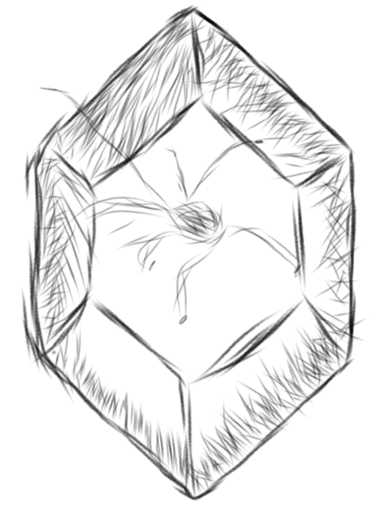
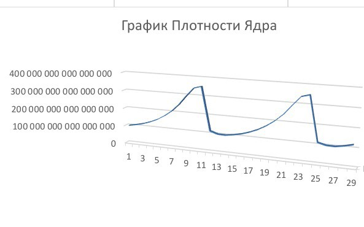

Алмаз не стабильности представляет из себя объект кристаллической формы имеющий сверхплотное ядро добывающийся в спецшахтах в █████

Ядро алмаза не стабильности генерирует виртуальные частицы, и с помощью критического гипер-поля разъединяет пару частицы и анти-частицы, превращая виртуальные частицы в реальные. При их накапливании плотность ядра растёт, после чего достигая критических значений ядро высвобождает частицы, (что можно заметить как похожие на молния плазменные каналы)уменьшая свою плотность. Из-за этого при изучении алмаза нестабильности требуется подключать стабилизаторы.

<>При попадении в двигатель невероятности вокруг двигателя появляется локальный пузырь сверхбыстрого расширения. Из-за хаотической инфляции пузырь принимает неправильную форму и миры уничтожаются неравномерно. Всё нелокальное что попадает в пузырь аннигилирует в обычную энергию. Пузырь расширяется быстрее третьей жабий скорости без аннигиляции, что возможно благодаря тому что все частицы попавшие в пузырь сразу же разрушаются на энергию. При окончании энергии пузырь разрушается из-за энтропии.При прикосновении к алмазу без перчаток, алмаз может начать колебаться быстрее. Это не страшно, ведь стабилизаторы замедлят колебание до изначальной скорости. Если стабилизаторы выключены, то ядро может выбросить всю свою энергию, из-за расширения алмаз не стабильности треснет и взорвется осколками. Выключать стабилизаторы при изучении не стоит.
Исследование №1 22-02-2026
Целью исследования было узнать из чего состоит алмаз не стабильности, узнать больше про его свойства а также изучить ядро алмаза. С помощью электронного микроскопа мы узнали что алмаз не стабильности состоит из трехмерной кристаллической решетки. Для изучения ядра пришлось разрушить сам алмаз. С помощью 3Д-сканирования внешнего контура, газовой пикнометрии и компьютерной томографии была рассчитана плотность ядра, а также было обнаружено что плотность со временем изменяется. Из-за этого, мы начали изучать почему плотность ядра постоянно меняется, и мы узнали о том, что ядро создает виртуальные частицы, создавая из них реальные частицы.
Исследование №2 27-05-2026
Из-за незапланированного уничтожения алмаза, никакой новой информации не было найдено.
Информация о локальном пузыре сверхбыстрого расширения была получена с помощью симуляций на существующих данных, а также созданию похожих условий.
Статьи